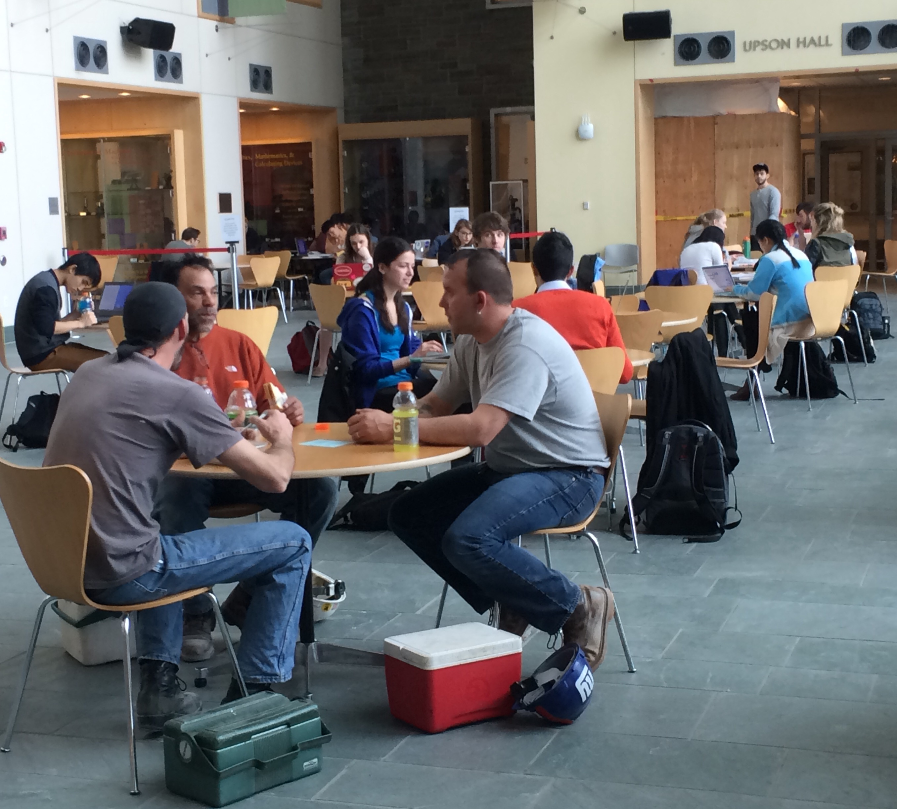

Our Focus
We want to explore how a robot can transmit emotions from professors to students and vice versa and establish a greater sense of understanding amongst participants in the lecture. Our robot will improve class discussion by simply expressing the overall group emotion to the professor i.e. making loud noises to indicate frustration or tapping a soothing beat for contentedness. Students and professors will share a two-way stream of communication through expressive robots that connect their feelings together to improve attentiveness in a class setting.
Preliminary Observations
On March 8, we observed students and professors at Duffield Hall and saw different communication patterns exchanged between them.
- Most students individually worked on their computers without looking at others.
- Students that sat with professors paid closer attention to them and treated the authority figure with more respect compared to their friends. 
Brainstorming Session
Each of us met up the next day to discuss how we could create an expressive robot to solve this disconnect between students and authority figures.
- How can we make people sit in different spots in a lecture hall?
- How is the laptop a physical barrier to group communication?
- How can we increase communication between different members in a team? I.e. leader, programmer, designer, business strategist?
- Are students intimidated by professors in a lecture hall? Is it a social norm to listen?
Afterwards we brainstormed a number of ideas ranging from creating a robot that mimics the class atmosphere for the professor and wearables to keep students focused in lecture.
Observations in a Lecture Hall
We observed how students interacted with each other and with the professor in a lecture hall in Olin Hall.
How does the team resolve conflicts, make decisions, balance contributions, or engage in creative activities?
- Professor and teaching assistants often walked up and down the aisles to answer individual student questions and clear up any confusion.
- Every twenty minutes or so, the Professor asked a question to the class.
What objects play a central role during teamwork?
- Good communication and focus is crucial for students to understand what the professor is doing on the screen and learn during the lecture.
- Professor needs to understand the class atmosphere, but has difficulty reading facial expressions especially in a large lecture hall. He can not hold students accountable for not paying attention if he can not see what’s on their computers.
- Often times, students felt distracted by their phones, computers, and friends.
Design Project II videos
Alex
Yu Meng
Janani
Pehuen
Team members
Alex - as898@cornell.edu
Lucy - lh486@cornell.edu
Janani - ju48@cornell.edu
Kate - ykz2@cornell.edu
Pehuen - ppm44@cornell.edu